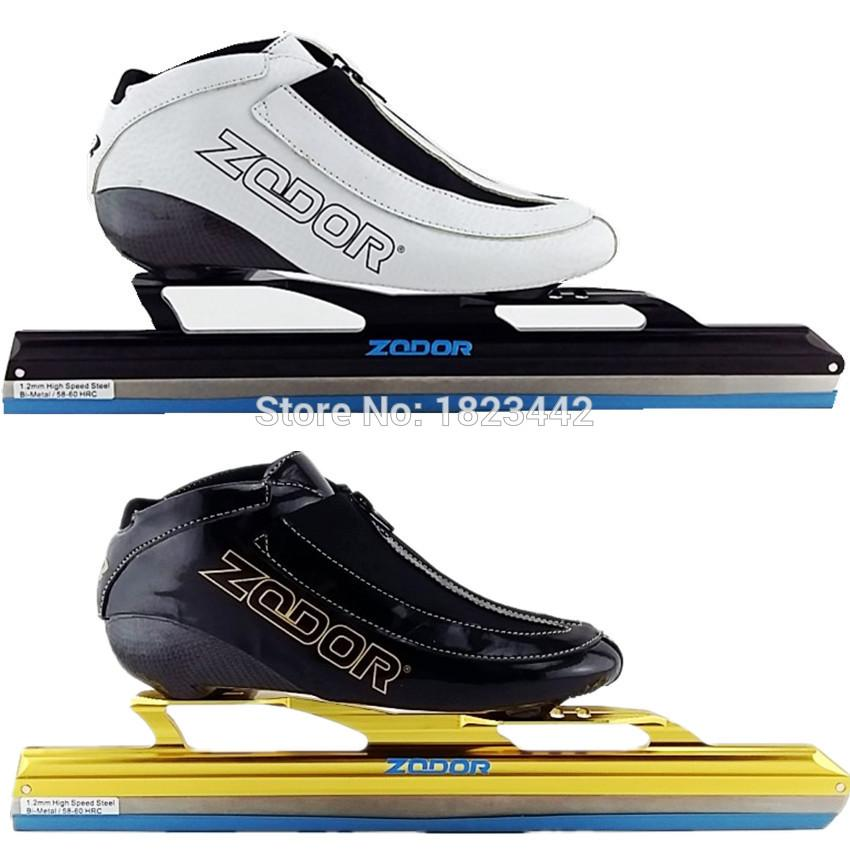
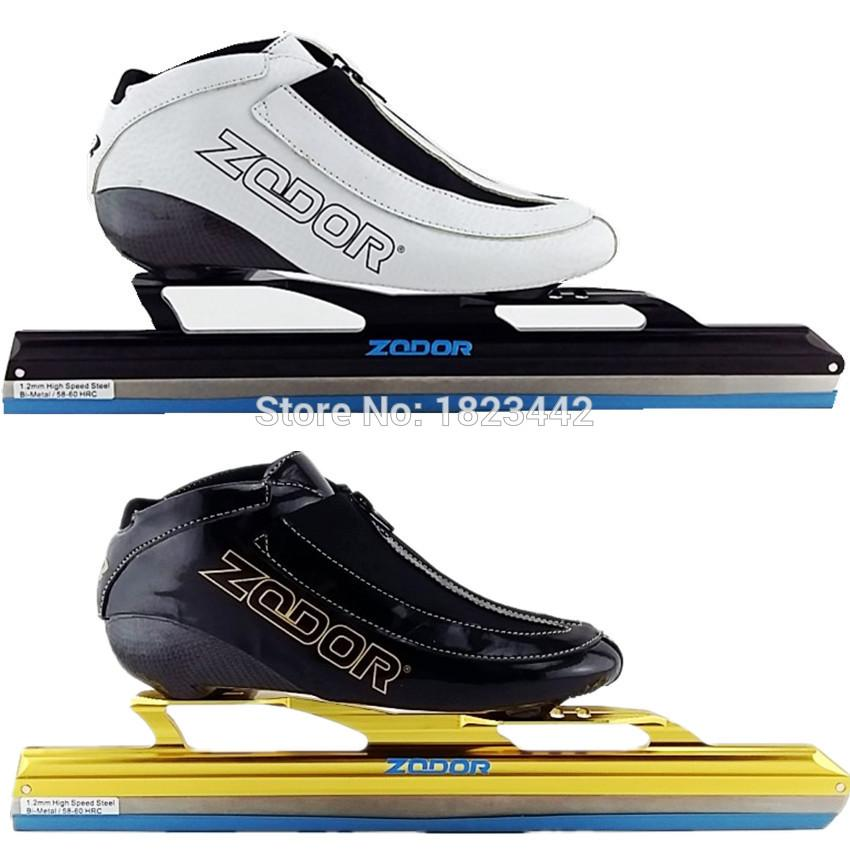

Short track Skate
There are different types of Skates, but all of them have the same two components - A shoe and a blade. One without the other is utterly useless. You shoudl be very careful when choosing what blade and shoe to buy.+
There are some tips:
- Consider your height when choosing blade
- Don't the shoe to be outright comfortable - it would take some time.
- Always check the laces - they mustn't give in to pressure
- Your socks shouldn't be slippery, neither too dense
- Of course, try to match the colors - it looks nice
Short track Blade
There are different kinds of blades, but all of them must be strong enough. I've seen blades in the colors of black, golden yellow, cyan, red and some more.
History
Short track speed skating developed from speed skating events that were held with mass starts. This form of speed skating was mainly practised in the United States and Canada, as opposed to the international form, where athletes skated in pairs. At the 1932 Winter Olympics, speed skating events were conducted in the mass start form. Competitions in North America tended to be held indoors, for example in Madison Square Garden, New York, and therefore on shorter tracks than was usual for outdoor skating.
In 1967, the International Skating Union (ISU) adopted short track speed skating, although it did not organize international competitions until 1976. World Championships in short track speed skating have been officially held since 1981, although events held in 1976–1980 under different names have since received the status of World Championships retrospectively. The name of the competition was changed several times before it was eventually titled the "World Short Track Speed Skating Championships" in 1989; the championships are now held annually.